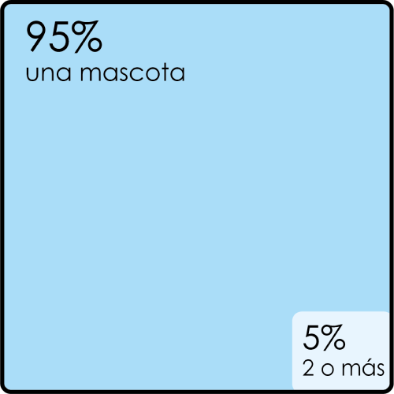
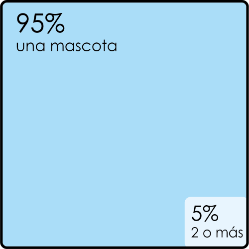

Hoy en día se percibe en los hogares una gran reducción de personas que componen una unidad familiar colombiana en comparación a lo que se venía observando en el pasado el número de personas que componían dicho núcleo eran en promedio más de 6 personas en donde en el presente encontramos en promedio 1 a 3 personas como se puede observar en la siguiente gráfico del Dane (Figura #1).
Debido a lo anterior se generó un constante crecimiento en la adquisición de mascotas por parte de las familias colombianas, viéndolo como un gran beneficio afectivo ocupando aquellos puestos en la familia y teniendo un gran valor en el hogar. Esto ha dado a tal magnitud que ha llegado a cambiar la mentalidad de las nuevas generaciones en donde prefieren con mayor anelo tener una mascota que un infante.
Tiene tanta importancia que ha generado un aumento en lo que es comercio relacionado con mascotas, solo en bogotá ya existe un centro comercial para animales domésticos en donde se puede encontrar diferentes servicios y productos relacionado con la tenencia y cuidados, aprovechando el interés de los dueños en darle una excelente calidad de vidad y lujos.
En 2018 la Alcaldía de Bogotá realizó unas encuestas a 402 propietarios de mascotas ubicados en diferentes localidades de la ciudad de Bogotá, en donde se determinó la presencia continua de animales en los hogares de los bogotanos. También mencionan la preferencia por los usuarios de las diferentes animales domésticos(Figura #2) y también la cantidad en promedio que tiene cada usuario (figura #3).
 

“El mercadeo de productos relacionados con perros y gatos ha crecido 44% en Latinoamérica durante los últimos cinco años, y se proyecta que crezca por lo menos 15% en los próximos años. Colombia no ha sido ni será ajena a esta tendencia.” (Forero, 2016)